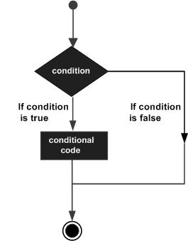

Java - Decision Making
Advertisements
Decision making structures have one or more conditions to be evaluated or tested by the program, along with a statement or statements that are to be executed if the condition is determined to be true, and optionally, other statements to be executed if the condition is determined to be false.
Following is the general form of a typical decision making structure found in most of the programming languages −
Java programming language provides following types of decision making statements. Click the following links to check their detail.
|
Sr.No. |
Statement & Description |
|
1 |
An if statement consists of a boolean expression followed by one or more statements. |
|
2 |
An if statement can be followed by an optional else statement, which executes when the boolean expression is false. |
|
3 |
You can use one if or else if statement inside another if or else if statement(s). |
|
4 |
A switch statement allows a variable to be tested for equality against a list of values. |
The ? : Operator
We have covered conditional operator ? : in the previous chapter which can be used to replace if...else statements. It has the following general form −
Exp1 ? Exp2 : Exp3;
Where Exp1, Exp2, and Exp3 are expressions. Notice the use and placement of the colon.
To determine the value of the whole expression, initially exp1 is evaluated.